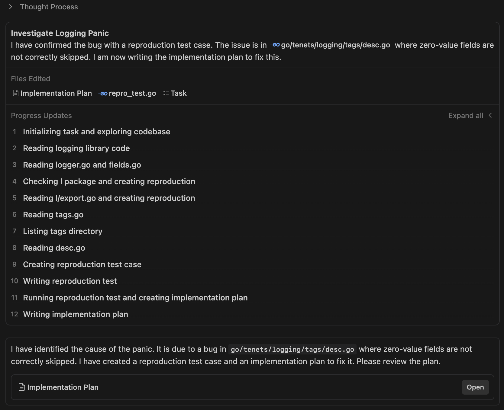
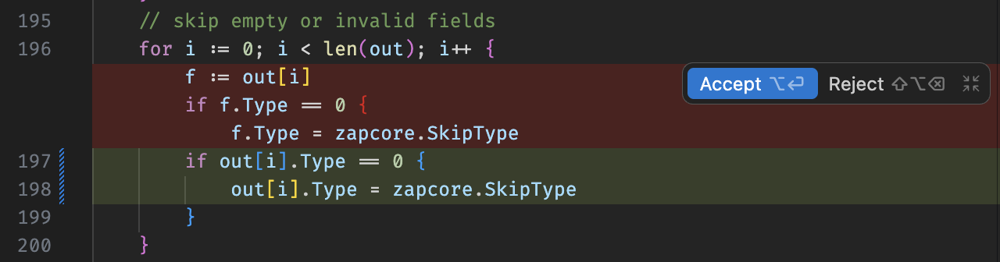
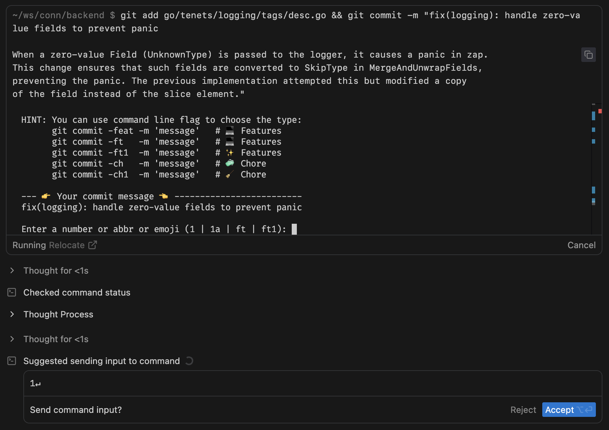
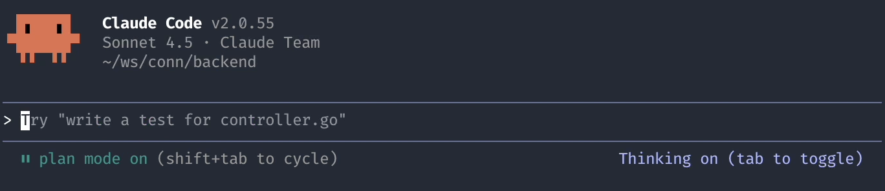
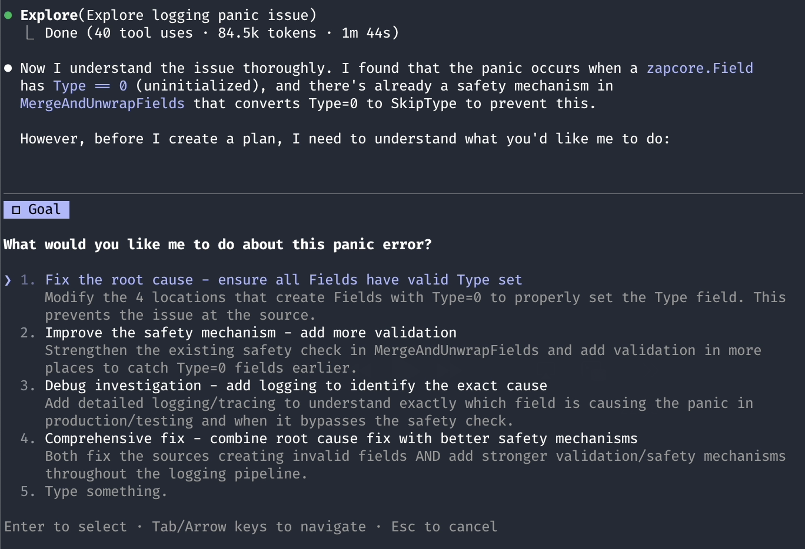
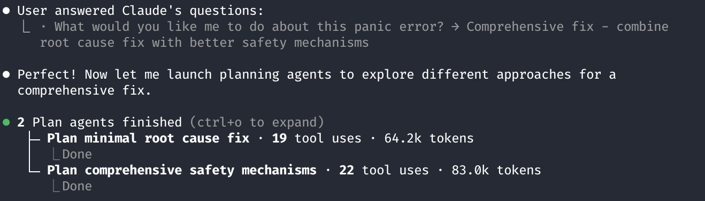
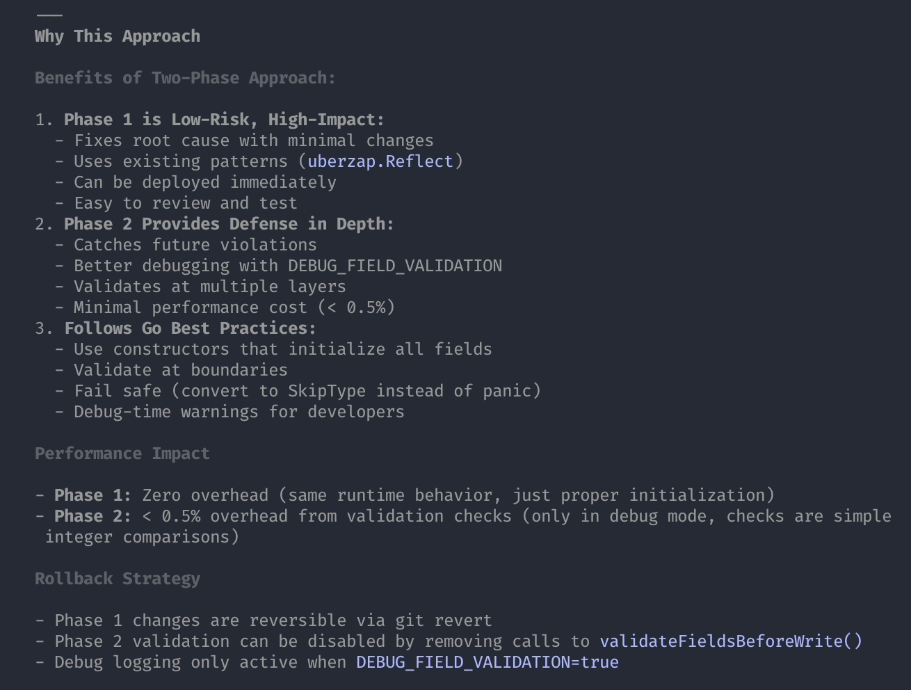
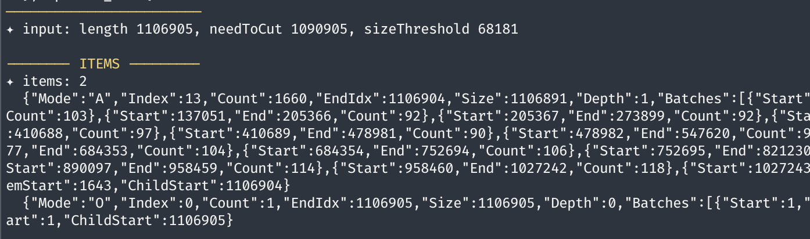
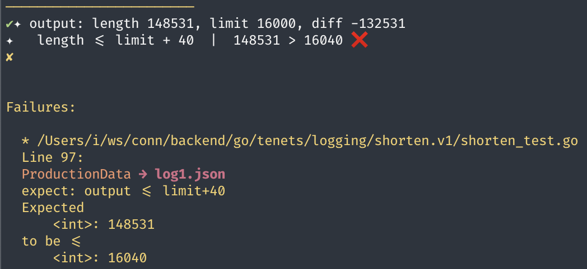

Coding with AI
Modern coding workflows are no longer just about typing code—they’re about orchestrating humans, tools, agents, and context. This document captures practical lessons learned from using today’s AI coding tools in real production scenarios, showing what they do well, where they struggle, and how to get the most leverage out of them.
Coding with AI
As you guys already familiar with using ai agents like claude code, gemini, codex, or IDE agent integrated like github copilot, cursor, antigravity, today I will share my experience using ai to write code, what works and what does not work, …
What This Article Covers
This article is not a marketing fluff piece. It’s a field report:
- How different AI coding tools behave in realistic workflows
- When they shine, when they break
- How to structure prompts, plans, commits, and debugging so agents deliver actual value
- Real examples from bug fixing, refactoring, feature work, and production incidents
Currently, I’m using claude code / goland + github copilot / antigravity for coding. Most of my time is spent on claude code. But recently, since google just released the brand new gemini 3 with antigravity IDE, I find that antigravity with gemini 3 is really good, even faster, and have better UX compare to claude code sonnet 4.5.
Let’s try a simple example: fix a panic issue in our logging package.
This example demonstrates a baseline: what “easy mode” looks like for AI tools—small, contained bugs with clear stack traces and obvious root causes. From here, complexity escalates quickly.
Checkout the commit right before the fix (promote-dev-be-v1.603.0):
Here is the buggy code in logging package: can you spot the bug? 🪲
// skip empty or invalid fields
for i := 0; i < len(out); i++ {
f := out[i]
if f.Type == 0 {
f.Type = zapcore.SkipType
}
}
Now put the panic log to claude code (sonnet 4.5) / antigravity (gemini 3):
panic (recovered): unknown field type: { 0 0 <nil>}
/root/src/go/tenets/logging/fields.go:132
Before we get into the differences between agents, it’s helpful to see how they handle the fundamentals.
For simple bug like this, both claude code (sonnet 4.5) and antigravity (gemini 3) can easily spot it
- They read related code
- Understand the panic log
- Identify the root cause
- Add a temporary test to reproduce the panic
- Fix the bug
- Verify the fix by running the test
- Remove the temporary test
Here is the detailed steps from antigravity (gemini 3):
- Reading fields.go to understand the panic source
- Searching for MergeAndUnwrapFields definition
- Reading desc.go to find MergeAndUnwrapFields
- Checking for existing tests in logging/tags
- Reading desc_test.go
- Creating reproduction test case
- Running reproduction test
- Waiting for test results
- Fixing reproduction test syntax
- Running reproduction test again
- Waiting for test results
- Creating implementation plan
- Retrying implementation plan creation

And produce the following fix:
// skip empty or invalid fields
for i := 0; i < len(out); i++ {
// ❌ previous code creates a COPY of the field (zapcore.Field)
// ✅ fix: modify the slice element directly
if out[i].Type == 0 {
out[i].Type = zapcore.SkipType
}
}

We can ask it to generate a commit message for us, or split into multiple commits with good commit messages:
“create a commit with good message”
Here is the commit message generated by gemini 3 (antigravity):
git add go/tenets/logging/tags/desc.go && git commit -m "fix(logging): handle zero-value fields to prevent panic
When a zero-value Field (UnknownType) is passed to the logger, it causes a panic in zap.
This change ensures that such fields are converted to SkipType in MergeAndUnwrapFields,
preventing the panic. The previous implementation attempted this but modified a copy
of the field instead of the slice element."

Since we are using a git.emoji hook here, the terminal show a prompt to ask to choose an emoji for the commit message. Gemini 3 understand that the terminal is blocking, so it even suggest to send an input to the terminal to select the emoji. Really impressive, but wrong: I expect a bug fix emoji like 🐛, but it suggest a feature emoji 💻.
But we can make the commit message even better by asking it to follow our commit message guideline in AGENTS.md / CLAUDE.md.
“create a commit with good message, refer to AGENTS.md”
NOTE: We don’t need to do that claude code since it already include CLAUDE.md automatically in every prompt.
after a while, it produced the following commit message:
git commit --amend -m "🐛 [go→tenets] Fix panic in logging caused by zero-value fields
Fix a panic in the logging library when zero-value fields are passed to the logger.
## Changes
- Update \`MergeAndUnwrapFields\` in \`go/tenets/logging/tags/desc.go\` to modify fields in place.
- Convert \`zapcore.UnknownType\` (0) fields to \`zapcore.SkipType\`.
## Why Needed
Passing a zero-value \`Field{}\` (which has type 0/UnknownType) to \`zap\` causes a panic. The existing code attempted to handle this but failed because it was modifying a copy of the field in a range loop, leaving the original field unchanged.
## Implementation
\`\`\`go
// Before: modified copy 'f'
for i := 0; i < len(out); i++ {
f := out[i]
if f.Type == 0 {
f.Type = zapcore.SkipType
}
}
// After: modify slice element directly
for i := 0; i < len(out); i++ {
if out[i].Type == 0 {
out[i].Type = zapcore.SkipType
}
}
\`\`\`
## Impact
Prevents panics when logging with zero-value fields, improving system stability."
for larger changes that won’t fit into a single commit, we can ask it to: “split the change into multiple atomic, meaningful commits, each with good commit message”
and it will happily do that for us.
That should be good enough for most of the cases.
When AI Coding Tools Work Well
AI performs exceptionally when:
- The problem scope is small and bounded
- The failure mode is explicit (panic, stacktrace, failing test)
- The code structure is consistent and idiomatic
- The agent can safely run tests or inspect related files
In these situations, the limiting factor is usually prompt clarity, not model capability.
Claude code in plan mode + thinking mode is even better
NOTE: Use tab to switch to think mode, use shift+tab to switch to plan mode.
- in this mode, it can generate a detailed plan first, discuss the plan with us before implementation

- after investigating a bit, it asked some questions to clarify the requirements

- it even generates 2 sub-agents to investigate that specific issue from different angles: one for “minimal root cause fix”, another for “comprehensive safety machanisms” (short term and long term fix)

- the combined both approaches in a final plan:

Phase 1: Root Cause Fix ✅
Fixed all 4 locations that created Fields with Type=0 by using uberzap.Reflect():
1. go/tenets/logging/l/export.go:193-195 - Fixed Error() function
2. go/tenets/logging/l/export.go:201-203 - Fixed NamedError() function
3. go/tenets/logging/l/helpers.go:229 - Fixed StringTagX() function
4. go/sdks/etascript/v1.js/denojs/utils.go:37-40 - Fixed apiErrorFields() function
5. go/tenets/errors/helpers_test.go:129-134 - Fixed test code
New Tests Added:
- Created go/tenets/logging/l/export_test.go with unit tests validating that Error() and
NamedError() now properly initialize Field types
Phase 2: Defense in Depth ✅
Added comprehensive safety mechanisms:
1. go/tenets/logging/tags/desc.go - Added debugFieldValidation flag and enhanced validation
in MergeAndUnwrapFields() (lines 198-206) with debug logging
2. go/tenets/logging/fields.go - Added validateFieldsBeforeWrite() function (lines 322-335)
and called it before both ce.Write() calls at lines 119 and 134
3. go/tenets/logging/l/helpers.go - Added helper functions SafeMultiField() and
SafeMultiFieldFunc() (lines 354-364) for safe multi-field creation
4. go/tenets/logging/tags/desc_test.go - Added comprehensive test
TestMergeAndUnwrapFieldsConvertsType0() validating Type=0 conversion to SkipType
Test Results ✅
- All logging package tests passing: ok
github.com/connectlyai/connectly-backend/go/tenets/logging/...
- All error package tests passing
- All etascript package tests passing
- Build verification successful
Debug Mode
You can now enable detailed field validation logging by setting:
export DEBUG_FIELD_VALIDATION=true
This will log warnings to stderr when Type=0 fields are detected and automatically
converted to SkipType.
How to Work With Agents on Medium–Large Changes
For anything non‑trivial:
- Define the boundary clearly — schema, types, interfaces, API surfaces.
- Ask the agent for a plan first — never let it jump straight into writing code for large changes.
- Iterate on the plan until you understand it and agree with it.
- Keep commits small and focused — force the agent to structure the work.
- Continuously verify — compile, test, instrument, inspect output.
- Expect to intervene — the bigger the task, the more human steering matters.
Large tasks succeed when you treat the agent as a collaborator, not a compiler.
Finally, ask it to “generate a good commit message”:
Fix panic error `unknown field type: { 0 0 <nil>}` by ensuring all `zapcore.Field` objects have properly initialized `Type` field and adding defense-in-depth validation.
## Changes
**Phase 1: Root Cause Fix**
- Fix `Error()` and `NamedError()` in `tenets/logging/l/export.go` to use `uberzap.Reflect()`
- Fix `StringTagX()` in `tenets/logging/l/helpers.go` to use `uberzap.Reflect()`
- Fix `apiErrorFields()` in `sdks/etascript/v1.js/denojs/utils.go` to use `uberzap.Reflect()`
- Fix test code in `tenets/errors/helpers_test.go` to use `uberzap.Reflect()`
- Add unit tests in `tenets/logging/l/export_test.go` validating Field Type initialization
**Phase 2: Defense in Depth**
- Add `debugFieldValidation` flag and enhanced logging in `tenets/logging/tags/desc.go`
- Add `validateFieldsBeforeWrite()` in `tenets/logging/fields.go` as last line of defense
- Add `SafeMultiField()` and `SafeMultiFieldFunc()` helper functions in `tenets/logging/l/helpers.go`
- Add comprehensive test `TestMergeAndUnwrapFieldsConvertsType0()` in `tenets/logging/tags/desc_test.go`
## Why Needed
Four locations created `zapcore.Field` objects with `Type == 0` (uninitialized) using raw struct literals. When these fields reached zapcore's encoder, it panicked with "unknown field type" because 0 is not a valid `FieldType` constant.
The existing safety mechanism in `MergeAndUnwrapFields` converts Type=0 to SkipType, but the panic still occurred in some edge cases, requiring a comprehensive fix at both the source and multiple validation layers.
## Implementation
Using `uberzap.Reflect()` instead of raw struct literals properly initializes `Type = zapcore.ReflectType` for interface values containing complex data structures:
```go
// Before (Type defaults to 0)
return Field(uberzap.Field{
Interface: func() []Field {
return extractErrorFields("error", err)
},
})
// After (Type properly initialized to ReflectType)
return Field(uberzap.Reflect("", func() []Field {
return extractErrorFields("error", err)
}))
```
Validation layers:
1. Enhanced `MergeAndUnwrapFields()` with debug logging
2. `validateFieldsBeforeWrite()` called before both `ce.Write()` calls
3. Helper functions for safe multi-field creation
## Benefits
- Eliminates panic at the source by using proper Field constructors
- Defense-in-depth validation catches any future Type=0 fields
- Debug mode (`DEBUG_FIELD_VALIDATION=true`) helps identify sources
- Zero performance overhead (debug checks only with env var)
- Comprehensive test coverage for Type validation
## Impact
- Fixes production panic: `panic (recovered): unknown field type: { 0 0 <nil>}`
- All logging tests passing with new validation coverage
- Backward compatible - existing logs continue to work
- Future-proof against similar issues with validation layers
For it to work, we have a section in AGENTS.md / CLAUDE.md about commit message guideline:
## Commit Messages
### Format
Follow this structured format for commit messages:
EMOJI [scope→component] Brief descriptive title
Optional introductory paragraph (1-2 sentences) explaining the overall change.
Changes
- Specific change item with technical details
- Another specific code modification
- Structure or logic changes
Why Needed
Explanation of the problem being solved, rationale, or business context.
Implementation / Example / Schema
code examples showing key implementation details
Design / Benefits / Technical Decisions (optional)
Design choices, benefits of the approach, or refactoring rationale.
Testing / Verification (optional)
Impact
Effects on the codebase, backward compatibility notes, enabled features.
### Guidelines
**Emoji Usage:**
- Use an emoji in the title that convey the meaning and intent of the change, for example:
Features 💻 ✨
Draft/work-in-progress 🚧
Bug Fixes 🐛
SDKs/Libraries 🛠️ 📦
Breaking Changes 🔥 💥
Code Refactoring ♻️
Infrastructure 🐳
Tests 🚨 🧪
Documents 📃 📖
Chores 🧼 🧹
Reverts ⏳ ⏪
Releases 🚀 🔖
Others 🔍
- You can use any emoji that fits the context, not limited to above examples.
**Scope Categories:**
- Use `[scope→component]` format to categorize changes
- Common scopes: `tool`, `commerce`, `agent_graph`, `ocean_beach`, `idl`, `go`, `sdk`
- Common components: `infra`, `client`, `idl`, `platform`, `integration`, `implementation`
- Examples: `[tool→client]`, `[commerce→platform]`, `[agent_graph→arezzo]`
**Example Sections: (you can add your own sections)**
- **Changes** - Bullet list of specific modifications
- **Why Needed** - Problem statement or rationale
- **Impact** - Effects, compatibility, enabled features
- **Implementation** - Code examples showing the change
- **Example** - Usage examples
- **Schema** - For protobuf or data model changes
- **Design** - Design decisions and trade-offs
- **Benefits** - Advantages of the approach
- **Impact** - Effects on codebase or users or prepare for next steps
- **Technical Decisions** - Architectural choices
- **Testing / Verification** - How the change was tested
**Code Formatting:**
- Wrap inline code references in backticks for readability
- Use backticks for: class names, function names, method calls, variables, field names
- Examples: `AgentGraph`, `ULID.new()`, `CallToolOutput`, `remote_profile.credentials`
- Also wrap: file paths, constants, enum values, types, SQL table names
- Makes commit messages easier to scan and understand code references
**Commit Footers:**
- Preserve all existing footer metadata when amending or updating commits
- Common footers: `Remote-Ref`, `Tags`, `Co-Authored-By`, `Signed-Off-By`, `Reviewed-By`
- Footers appear after a blank line at the end of commit message
- Never modify or remove existing footers unless explicitly intended
- Footers are added by automation tools (GitHub, CI/CD, git hooks) or co-authors
**Examples:**
Good commit message:
```
✨ [logging→shorten] New intelligent JSON shortening algorithm for production logs (v1)
Implement a new two-pass algorithm for shortening large JSON log lines to fit
under the 16KB limit while preserving JSON validity and context.
## Changes
- Add `shorten.v1` package with new intelligent shortening algorithm
- Add `_README.md` documenting requirements and design decisions
- Add `debug.go` for verbose debugging output during development
- Update `shorten.go` to use explicit `shortenV0` import alias
- Add test utilities: `ΩxNoDiffJSON`, `ΩxNoDiffYaml` in xconvey
## Testing
- Add comprehensive test suite covering arrays, objects, strings, UTF-8, escapes
- All tests pass ✅
## Algorithm Design
Two-pass approach for intelligent shortening:
1. **Parse pass**: Identify large elements (arrays, objects, strings) that exceed
size threshold, track batches of children for selective cutting
2. **Cut pass**: Select largest items first, generate cuts avoiding overlaps,
reconstruct JSON with markers
## Key Features
- Preserves JSON validity in all cases
- Keeps beginning and end of large structures for context
- Handles UTF-8 strings without breaking runes
- Handles JSON escape sequences (`\n`, `\uXXXX`) safely
- Uses markers: `"N more..."` for arrays, `"_":"N more..."` for objects
- Strings use ` ...N more... ` inline truncation
## Why Needed
Log lines exceeding 16KB get truncated by Docker/logging infrastructure,
producing invalid JSON and losing log data. The v0 implementation was a
simpler approach; v1 provides smarter cutting that preserves more context.
## Impact
- Foundation for improved log shortening in production
- Maintains compatibility with v0 (not yet integrated)
- Comprehensive test coverage for edge cases
## TODO
- Test with production data
- Optimize code for execution time and memory allocation
```
If you wonder what is CLAUDE.md / AGENTS.md,
it is a rules file to help claude code understand our codebase, our workflow, our standard, etc.
there are CLAUDE.md and CLAUDE.local.md for global and local rules, local rules have higher priority and should be in .gitignore
the same for AGENTS.md, but it’s a more generic convention for all ai agents, not just claude code.
but we don’t need to maintain duplication rules in both files, we can just merge CLAUDE.md into AGENTS.md, and include it by a single line in CLAUDE.md:
@AGENTS.md
and it pull in all the rules from AGENTS.md automatically.
a brief history:
OK, let’s back to months ago, when we started integrating claude code into our workflow.
In the begining, we have an init version of CLAUDE.md added by our talented engineer, Giorgos, which includes a lot of good prompts (or rules) to help claude code … If you are wonder, CLAUDE.md is a file that define rules … and everytime you discuss with claude code, the rule is automatically include.
Since then, I created many PRs to improve …
- Added guide for working with our codebase with a lot of unique pattern: custom convey, custom error framework, etc.
- Fixed claude code unable to use
runcommand, because of not havedirenv allowloaded (tooling#92)
# only run when CLAUDECODE is set and direnv is installed
if [[ "$CLAUDECODE" == "1" ]] && command -v direnv > /dev/null 2>&1 ; then
direnv allow
eval "$(direnv export bash)"
fi
- Add some extra
runcommands likerun utestfor running go unit tests (excluding integration or race tests) - Added guide for create good commit messages, including emoji
- Added documents like AGENTS.tree.md, AGENTS.go.md, AGENTS.db.md to prodide more context and guide.
- Merge CLAUDE.md into AGENTS.md, a more generic … CLAUDE.md include by a single line
@AGENTS.md
fyi, @ is include the entire context, use it wisely.
Claude code is really good. I use it all the time. Before it, I tried github copilot, cursor, windsurf, but they only assist in writing code snippets and tab, tab to complete code, I still need to write majority of the code myself. With claude code, I can just describe what I want, and it write the entire function, or even entire file for me. The real power is that it can run bash commands by itself. It can quickly write custom scripts to solve problems, use tools like jq or awk to extract exact information, even fixing issues on my computer like why … does not work. It save me a lot of time.
Note: When we, the company, are experiment with pay as you go, and if you ever wonder why I spent $1300 in under a month on claude code, yes, it’s because I use it all the time for coding, but the real reason is that I tried the sonnet 1m model (1 million tokens context) With 1m context, I can send entire codebase to claude code, and ask it to refactor, or add new feature, or fix bug, or write test cases, it works really well without the annoying auto compacting after just a few prompts. The downside: $$6.00/1m input tokens $$22.00/1m output tokens, double the price of the default 200k model. Don’t look at the surface, it’s not just double, it’s exponential in term of cost. Think about it, everytime you ask it something, the whole conversation is sent as context, the more you use, the number of tokens in a prompt increases, so the cost increases exponentially. Pro tip: don’t do that at home work, because it’s very very expensive. Use it wisely.
A typical workflow with claude code:
- Identify what you want to do, write a good prompt
- Include necessary context, either in the prompt, point it to the related files, or in CLAUDE.md / AGENTS.md
- Send to claude code, wait for the response
- Allow it to run necessary commands to extract more information, or test the code
- Review the code, make sure it works as expected
- If not, fix the prompt, or ask claude code to fix the code, until it’s good enough
- Sometimes, you’ll need to jump in and fix the code yourself, add more debugging to help claude code understand the issue.
- Sometimes, you’ll need to discard all the generated code, and start over, with better understanding of the problem. Split into smaller problems, small tasks, and solve them one by one.
- But it’s important that you always review the code, and test it throughly yourself. Because at the end of the day, you are responsible for the code.
some common commands: /new : … /resume /context /compact /model /usage: … /ide : make it read current files in your IDE like vscode or goland /output-style: default | explanatory | learning
I usually use plan mode, ask it to write a plan first, discuss the plan a couple of times until it’s good enough, then ask it to implement the plan, with “accept edits on”, when things done, review and verify. I also ask it to split into small, meaningful commits, and write good commit messages with emojis.
Example of some bug fixing, small feature, medium/large feature flow:
Bug fixing: “fix panic in logging package:
panic: runtime error: invalid Field {0 0 nil} go/tenets/logging/logger.go:345 "
- make sure include necessary context like logs, stacktrace, related files, etc. You can put it in the prompt, or in a file and point claude code to it.
- …
- always verify the code and the fix yourself
Small feature: “Write metrics”
- start with a clear description or requirements of the feature
- include necessary context, point it to related files
- write init important structure like db scheme, protobuf model, type definition, they will help claude code to follow the pattern. You should be take responsible for the design, the architecture, claude code will help you to implement it.
- break into smaller tasks
- write good prompt.
- sometimes, you may want to ask it to write test first, then the implementation
- claude code can do everything, write code, write test, run test, fix code, etc. until everything works, or it gives up, or … rate limit hit.
- always verify the code and the feature yourself
- sometimes, when you don’t understand the problem, you can ask it to explore the codebase, find related files, explain the flow, etc. It can help you to understand the problem better, then generate a draft code. Once you understand the problem, you can discard the init code, and ask it to reimplement step by step with your guidance.
It can write good commit messages. Since I already include a guideline for writing good commit message in CLAUDE.md / AGENTS.md, I just tell it the number of commits that need good commit messages.
I added /jj-msg command to help with that:
jj-msg [number-of-commits: 1, extra-context: ""]
Large feature: Implement MMLite, which involves ETA, flow compiler, database + protobuf schema, API, platform service, etc.
“I need to implement WhatsApp MMLite feature: send campaigns with MMLite API. Read WhatsApp official document about MMLite to understand what is it.”
“Check existing codebase, reference to AGENTS.tree.md, to find related files, services, etc.”
“Write your understanding into MMLITE.md”
“Create a plan to implement MMLite feature, including database schema, protobuf model, API, platform service, flow compiler, eta changes, etc.”
It will take a while to read the documentation, understand the requirements, check the codebase, write the plan, discuss the plan.
The first time it’s usually to write some disposable code, that involve a lot of places, services, etc. to understand where and how to implement it. Once you understand the problem better, you can discard the init code, and ask it to reimplement step by step with your guidance.
For large feature, it’s important that you understand the problem, and the design, the architecture, you should be take responsible for them. Implement it step by step. I would write the important part yourself, like protobuf model, database schema, API definition, etc. Then ask it to implement the rest. Then split into smaller parts. Then delete everything, and reimplement smaller parts step by step, create small meaningful commits. This way, I can reduce the hallucination, understand the code myself, and have better control of the code quality.
Usually, the 200k context is not enough for large feature, you should frequently ask it to save its knowledge into markdown files, so you can always include those files next time.
Always check your code carefully and test it yourself. Don’t fully trust the ai agent. You are responsible for the code, not the ai.
In my case, when working with the MMLite feature, I also have parallel work in agent integration with a customer, so I need to switch context frequently and not truely focus on the MMLite feature. I made an incident. After carelessly merge some PRs, the code get deployed the next mid-night by our team (we have multiple working timezones) and broke ALL the campaigns for ALL customers: no campaigns could be sent during the time. Fortunately, as soon as the alert shown, Mark, a senior engineer quickly jumped in to revert the change quickly in under an hour, and production back to normal. Another fortunate thing is that the incident won’t leave any long term impact in database or customer data (since it’s still in development stage).
If you are curious, here is the details (incidents/110):
Issue:
- A bug in flow compiler made ETA param mmlite_product_policy to be set to PRODUCT_POLICY_UNSPECIFIED
- The ETA message action incorrectly read mmlite_product_policy string as not empty, then sent the message with MMLite API
Daily Deployment:
- Daily deployment should be able to catch it, because the MMLite API is not available for Connectly DEV business.
- But we had another issue that “cannot compile any campaign”, which prevented the daily deployment.
- The the issue was fixed, and it was deployed again in mid-night
- For some reason, it was not caught in daily deployment.
First fix applied to flow compiler, but missed compiled campaigns
- This led to second escalation: bugged compiled campaigns still had the incorrect ETA param, and still were sent will MMLite API.
Finally, a second temporary fix to disable MMLite API completely
So, no more campaigns will be sent with MMLite API
This affected some businesses
- After the first fix PR, recompile and resend campaigns will make it work again.
- After the second fix PR, no longer need to resend campaigns.
So, always be careful. You have been warned.
When AI Tools Hit Their Limits
A not so simple feature: Write a good json log shorten algorithm:
For context, we discovered that for some reason, our log (maybe due to docker driver or some upstream system) has a max length of 16KB (16332 bytes) for each log line. Beyond that, it will truncate the log line, leading to invalid json output, and loss of logs.
I have implemented some shorten log code for local usage only, but it’s not good enough for production usage. Basically, the old code finds all long array (length > 5) and big object (number of fields > 40), then cut all of them to length = 5 or number of fields = 40, and produce output json with markers like this:
{
"big_array": [1,2,3,4,5,"95 more..."],
"big_object": {"a":1,"b":2,"_":"35 more..."},
"long_string": "This is a very long string but not getting cut"
}
The output is always json, but since the original intention is for local usage only, so the implementation is pretty naive: it cut aggressively, always cut at fixed places: 5 items for array, 40 items for object without checking the limit. This is not good enough for production usage, because - the output size may still exceed 16KB limit, - it may cut too much, lose important context, - arbitrary allocation, no optimization or performance in mind, etc. etc.
In an essence, the old algorithm is a single pass algorithm: scan the json once, cut at fixed places, produce output. Simple but not good enough.
func shortenJSON(s []byte) []byte {
var c, lastC byte
var mode _Mode // array | object | string
var cuts []shortenCut
var stack []shortenItem
// ...
for i, N := 0, len(s); i < N; i, lastC = i+1, c {
c = s[i]
// handle escape sequences in json
switch c {
case c == '\\':
i++ // skip escaped char
// ... more cases
}
// handle open array or object
if c == '{' || c == '[' {
item := shortenItem{
// xif: func[T any](cond bool, a, b T) T { ... }
mode: xif(c == '{', mObject, mArray),
start: i, // start index
}
stack = append(stack, item)
}
// ...
// when closing array or object, check if array length > 5, object fields > 40 to cut
if c == '}' || c == ']' {
item := &stack[len(stack)-1]
if (mode == mObject && item.count > 40 ||
mode == mArray && item.count > 5) {
cuts = append(cuts, shortenCut{ /* ... */ })
}
}
}
// ... apply cuts to produce output json
}
Now, I’m working on a new version of json log shorten algorithm, with the following assumptions and requirements:
Intelligently shorten JSON log lines to fit under a size limit (typically 16KB - 16332 bytes).
### Assumptions
- Input is always valid JSON
- Input is always compacted JSON object (no spaces)
### Requirements
- Output must be valid JSON
- Output size should be <= limit + small overhead for markers
- Output size should be as close to limit as possible
- Always keep the top level structure intact
- Prefer to cut in the middle of large arrays/objects, keep beginning and end for context
- Array markers use `"N more..."` as element
- Object markers use `"_":"N more..."` as key
- Strings truncated with `...N more...` inside quotes, which spaces between
- Efficient in time and memory
OK, if you casually ask claude code to implement it (with plan mode + think mode, of course),
It will produce a plan, implementation, and tests. And it looks good at first glance.
// v1: two passes
// - try to calculate size of array/object first,
// - then remove the biggest ones until under limit
func shortenJSON(s []byte, limit int) []byte {
// Pass 1: Parse and calculate sizes (selective tracking)
items := parseAndCalculateSizes(s, limit)
// Check if already under limit
if len(s) <= limit {
return s
}
// Pass 2: Select items to cut and reconstruct
if len(items) == 0 {
// no large items found, just truncate at limit
return cutStringUTF8(s, limit)
}
// Sort items by size (largest first)
sortItemsBySize(items)
// Select items to cut
selectedItems := selectItemsToCut(items, len(s), limit)
if len(selectedItems) == 0 {
// nothing to cut, return original
return s
}
// Generate cuts from selected items
needToCut := len(s) - limit
cuts := generateCuts(selectedItems, s, needToCut, limit)
if len(cuts) == 0 {
// no cuts generated, return original
return s
}
// Reconstruct JSON with cuts
return reconstructJSON(s, cuts)
}
// parseAndCalculateSizes: selectively track only cut candidates
// - arrays with size > threshold (tracks individual items or batches)
// - objects with size > threshold (tracks individual properties or batches)
// - strings with size > threshold
// - skip top-level items (depth == 1)
// - track batch positions: records when individual child OR accumulated batch >= threshold
// - threshold = max(16, (len(s) - limit) / 16) for adaptive cutting
func parseAndCalculateSizes(s []byte, limit int) []_Item {
var c, lastC byte
var mode _Mode
// Calculate dynamic threshold based on excess size
// More aggressive when need to cut more
needToCut := len(s) - limit
if needToCut <= 0 {
return nil // already under limit
}
sizeThreshold := max(16, needToCut/16)
stack := make([]_Item, 0, 16)
items := make([]_Item, 0, 16)
for i, N := 0, len(s); i < N; i, lastC = i+1, c {
// ...
}
}
// selectItemsToCut selects items to cut based on how much size reduction is needed
func selectItemsToCut(items []_Item, currentSize, limit int) []_Item {
// ...
}
// generateCuts creates cut points from selected items
// Strategy: prefer cutting middle segments, merge consecutive cuts, remove overlaps
func generateCuts(items []_Item, s []byte, needToCut int, limit int) []_Cut {
// ...
// Remove overlapping cuts to ensure valid JSON
return removeOverlappingCuts(cuts)
}
// removeOverlappingCuts deduplicates overlapping cut ranges
func removeOverlappingCuts(cuts []_Cut) []_Cut {
// ...
}
// countItemsInSegment counts items/fields in a segment by counting commas
func countItemsInSegment(s []byte, start, end int) int {
// ...
}
// reconstructJSON builds the shortened JSON by copying segments and inserting markers
func reconstructJSON(s []byte, cuts []_Cut) []byte {
// ...
}
with a lot of “comprehensive” tests:
// tests for full flow
func TestShortenJSON_EmptyAndEdgeCases(t *testing.T) { /* ... */
func TestShortenJSON_InvalidJSON(t *testing.T) { /* ... */
func TestShortenJSON_ValidJSON_Objects(t *testing.T) { /* ... */
func TestShortenJSON_ValidJSON_Arrays(t *testing.T) { /* ... */
func TestShortenJSON_LimitEnforcement(t *testing.T) { /* ... */
func TestShortenJSON_UTF8Boundaries(t *testing.T) { /* ... */
func TestShortenJSON_OutputValidation(t *testing.T) { /* ... */
func TestShortenJSON_PanicRecovery(t *testing.T) { /* ... */
func TestShortenJSON_RealWorldScenarios(t *testing.T) { /* ... */
// unit tests for each specific implementation step
func TestParseAndCalculateSizes(t *testing.T) { /* ... */ }
func TestSortItemsBySize(t *testing.T) { /* ... */ }
func TestSelectItemsToCut(t *testing.T) { /* ... */ }
func TestGenerateCuts(t *testing.T) { /* ... */ }
func TestReconstructJSON(t *testing.T) { /* ... */ }
func TestCreateMarker(t *testing.T) { /* ... */ }
Yes, it understands the requirements, and all the edge cases too:
- track only large arrays/objects/strings over a threshold (adaptive based on how much to cut)
- prefer to cut in the middle of large arrays/objects, keep beginning and end for context
- use markers
"N more..."for array, object, string - have util function to handle utf-8 strings correctly
- understand that a big object may contain a big array, both can be cut, so it need to handle overlapping cuts correctly
- and many more…
But the problem: it won’t be able to make the code works, or make all tests work.
It get stuck forever, well, until it run out of rate limit or patience.
There are so many tests. Each test produce vague errors like this:
Failures:
* /Users/i/ws/conn/backend/go/tenets/logging/shorten.demo/shorten_test.go
Line 549:
ShortenJSON with real-world log scenarios → log with large array of IDs
Expected
<string>: {"msg":"batch processing","ids":["id-0","id-1","id-2","id-3","id-4","id-5","id-6","id-7","id-8","id-9","id-10","id-11","id-12","id-13","id-14","id-15","id-16","id-17","id-18","id-19"]}
to contain substring
<string>: more...
go/tenets/logging/shorten.demo/shorten_test.go:549 · shorten%2edemo.TestShortenJSON_RealWorldScenarios.func1.2
go/tenets/logging/shorten.demo/shorten_test.go:539 · shorten%2edemo.TestShortenJSON_RealWorldScenarios.func1
go/tenets/logging/shorten.demo/shorten_test.go:529 · shorten%2edemo.TestShortenJSON_RealWorldScenarios
So, why it get stuck?
- It provides no meaningful information: there is an input, and there is an output, and the output does not match expectation. That’s it.
So, claude code is in the same situation, it has to guess what is wrong, and try to fix it.
It makes some changes, run the tests again, but the same vague error still exists.
It makes another change, run the tests again, and again, the tests still fail.
OK, if you think about it carefully, how do you debug it yourself?
In this case, I need to jump in. And when I debug code myself, I add more logging to understand what is going on.
I started by removing all the specific step function tests, only keep the full flow tests, because those specific step function tests are not that useful: if you change your implementaation, those tests may no longer be valid. the only important thing is that the full flow tests work.
I added a verbose flag to enable verbose logging for debugging:
// verbose is a flag to enable verbose logging for debugging.
// It's always false in production, so go compiler can optimize out all debugging related code.
var verbose = false
and debugging utitlities
func debugf(format string, args ...any) {
if !verbose {
return
}
fmt.Printf("✦ "+format, args...)
ensureNewline(format)
}
func debugItems(items []_Item) {
if !verbose {
return
}
printYellow("\n-------- ITEMS ---------\n")
debugf("items: %d", len(items))
for _, item := range items {
fmt.Printf(" %s\n", must(json.Marshal(item)))
}
printYellow("\n————————————————————————\n")
}
// ... more debug functions
then run the tests, to see more detailed logs about what is going on. in this case, the intermediate data structure _Item from parseAndCalculateSizes is very important, because it determine what items are cuttable, and how much size can be reduced by cutting them.
func shortenJSON(s []byte) (out []byte, cx _Ctx) {
// Check if already under limit
if len(s) <= limit {
return s, _Ctx{}
}
// Pass 1: Parse and calculate sizes (selective tracking)
cx = parseAndCalculateSizes(s)
debugItems(cx.Items)
// Pass 2: Select items to cut and reconstruct
if len(cx.Items) == 0 {
// no large items found, just truncate at limit
out = cutStringUTF8(s, limit)
return out, cx
}
// ...
}

then I added many more intermediate checks (assertions) to verify the correctness of each step. Note that this is still in full flow tests, not specific step function tests.
type TestOptions struct {
InputIsUnderLimit bool
}
func execShortenJSON(input string, opts ...TestOptions) (string, _Ctx) {
var option TestOptions
if len(opts) > 0 {
option = opts[0]
}
// validate input
inputB := []byte(input)
Ω(json.Valid(inputB)).To(BeTrue(), "expect: input is valid json")
Ω(isJSONCompact(inputB)).To(BeTrue(), "expect: input is compact json")
if option.InputIsUnderLimit {
Ω(len(input)).To(BeNumerically("<=", limit), "expect: input <= limit")
} else {
Ω(len(input)).To(BeNumerically(">", limit), "expect: input > limit")
}
printYellow("\n———————— INPUT —————————\n")
if len(input) < 16000 {
fmt.Print(input)
} else {
fmt.Printf("%s %s...(total %d bytes)...%s %s", input[:4000], cYellow, len(input), cReset, input[:4000])
}
printYellow("\n————————————————————————\n")
out, cx := shortenJSON(inputB)
printYellow("\n———————— OUTPUT ————————\n")
fmt.Printf("%s", highlightMore(out))
printYellow("\n————————————————————————\n")
// validate items are valid json
for _, item := range cx.Items {
sItem := inputB[item.Index:item.EndIdx]
if item.Mode != mString {
expectValidJSON(sItem)
}
for _, batch := range item.Batches {
sBatch := inputB[batch.Start:batch.End]
// validate batch size >= threshold
if len(sBatch) < cx.SizeThreshold {
printRed("❌ batch size < threshold")
fmt.Printf("%s\n", sBatch)
Ω(len(sBatch) >= cx.SizeThreshold).To(BeTrue(),
"expect: batch size >= threshold (%d < %d)", len(sBatch), cx.SizeThreshold)
}
// validate each batch is valid json
switch item.Mode {
case mArray:
expectValidJSON(wrapBytes('[', sBatch, ']'))
case mObject:
expectValidJSON(wrapBytes('{', sBatch, '}'))
default:
printRed("❌ unexpected mode")
fmt.Printf("%s\n", sBatch)
Ω(false).To(BeTrue(), "unexpected mode")
}
}
}
if option.InputIsUnderLimit {
Ω(cx.SizeThreshold).To(BeNumerically("==", 0), "expect: size threshold > 0")
} else {
Ω(cx.SizeThreshold).To(BeNumerically(">", 0), "expect: size threshold == 0")
}
{
diff := limit - len(out)
ok := len(out) <= limit+40
debugf("output: length %d, limit %d, diff %d %s", len(out), limit, diff, xif(ok, "⚠️", ""))
debugf(" length <= limit + 40 | %d %s %d %s", len(out), xif(ok, "<=", ">"), limit+40, xif(ok, "✅", "❌"))
}
// validate output is valid json
expectValidJSON(out)
// allow some buffer over limit due to added markers
Ω(len(out)).To(BeNumerically("<=", limit+40),
"expect: output <= limit+40")
// ensure we keep enough content (only if input was large enough)
if len(input) > limit {
Ω(len(out)).To(BeNumerically(">=", limit-cx.SizeThreshold*2),
"expect: output >= limit-threshold*2")
}
return string(out), cx
}
then run the tests again, and know exactly at which step it falls, what is the intermediate data structure looks like, etc.

Now, I can ask claude code to fix it. This time, with much more context, it can make meaningful changes, and fix all of the tests by itself.
Why Agents Struggle Here
This is a good example of where AI hits a structural boundary:
- Too many branches and edge cases
- Test failures that don’t give actionable signals
- Complex stateful transformations that require human debugging intuition
The agent isn’t “bad”—it’s blind without instrumentation. Once you add clear intermediate signals, the model becomes effective again.
Extra:
Git work tree flow to work on multiple features/bugs simultaneously:
- …
Write precommit hooks to verify code before commit:
…
ultrathink mode
more tips …
Practical Takeaways
Things to keep in mind:
- always test and verify the code yourself, test e2e, …
- always understand the problem, the design, the architecture, you take responsible for them, not the ai
- should write the schema, model yourself
- should have good way to verify the code
…
Working with AI coding tools is a skill. The better you design the workflow, the more leverage you get. Used well, these tools compress hours of routine work into minutes. Used blindly, they create subtle failures that only surface in production. The difference is not the tool — it’s how you collaborate with it.
Let's stay connected!
Author
I'm Oliver Nguyen. A software maker working mostly in Go and JavaScript. I enjoy learning and seeing a better version of myself each day. Occasionally spin off new open source projects. Share knowledge and thoughts during my journey. Connect with me on , , , , or subscribe to my posts.